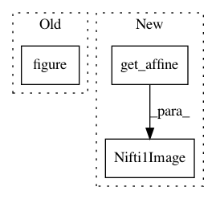

d190e8dc4f51f73e9d6b6e2fdf08f9cbfa352c5b,plot_haxby_searchlight.py,,,#,17
Before Change
mean_fmri = image.mean_img(fmri_img).get_data()
////// Searchlight results
plt.figure(1)
// searchlight.scores_ contains per voxel cross validation scores
s_scores = np.ma.array(searchlight.scores_, mask=np.logical_not(process_mask))
plt.imshow(np.rot90(mean_fmri[..., picked_slice]), interpolation="nearest",
cmap=plt.cm.gray)
After Change
////// F_score results
p_ma = np.ma.array(p_unmasked, mask=np.logical_not(process_mask))
plot_stat_map(nibabel.Nifti1Image(p_ma,
mean_fmri.get_affine()), mean_fmri,
title="F-scores", slicer="z", cut_coords=[-16])
plt.show()
In pattern: SUPERPATTERN
Frequency: 3
Non-data size: 3
Instances
Project Name: nilearn/nilearn
Commit Name: d190e8dc4f51f73e9d6b6e2fdf08f9cbfa352c5b
Time: 2014-06-17
Author: chris.gorgolewski@gmail.com
File Name: plot_haxby_searchlight.py
Class Name:
Method Name:
Project Name: nilearn/nilearn
Commit Name: 649db8e4c5e5a92ee8be8dea4f410a9719024f20
Time: 2014-06-17
Author: chris.gorgolewski@gmail.com
File Name: plot_canica_resting_state.py
Class Name:
Method Name:
Project Name: nipy/dipy
Commit Name: b125873cb6e0fa9f99137b256ac5fc602e4b72f1
Time: 2014-01-17
Author: Samuel.St-Jean@usherbrooke.ca
File Name: dipy/denoise/tests/test_nlmeans.py
Class Name:
Method Name: test_nlmeans